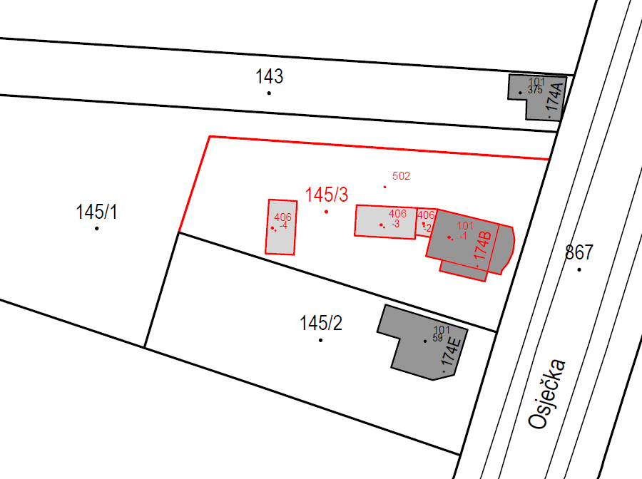
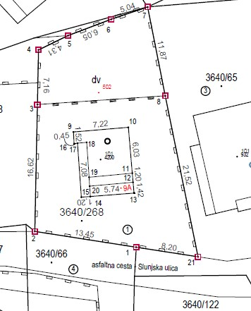
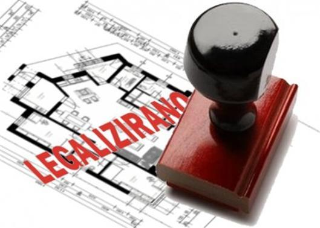
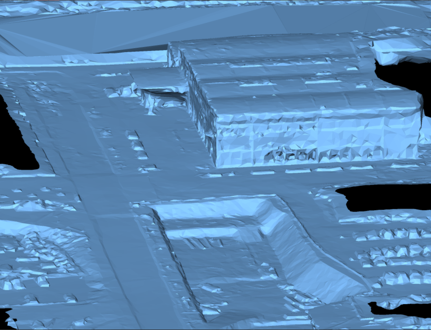
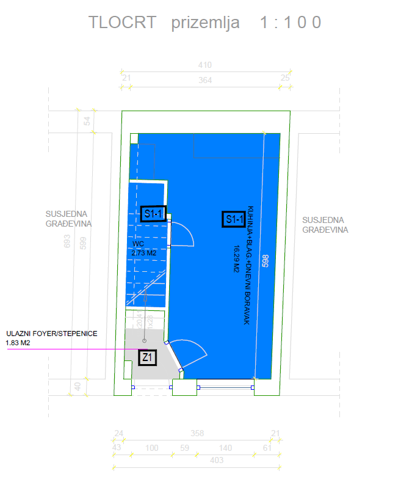

Zašto mi?
Preciznost u svakom koraku, inovacija u svakom mjerenju – vaša precizna točka u svijetu geodezije.
Ažurnost, preciznost, usluga od početka do kraja procesa. Poštujemo rokove jer preuzimamo projekata koliko smo kapacitirani za odraditi
Tvrtka smo sa značajnim iskustvom u geodeziji i geoinformatici, specijalizirana za pružanje vrhunskih geodetskih rješenja, a naš tim ima dugogodišnji niz odrađenih projekata u svim segmentima geodetskog inženjerstva poput geodetskih elaborata katastarske geodezije i zemljišne knjige, inženjerske geodezije (geodezije na gradilištima), aerofotgrametrije (snimanje dronovima), 3D laserska skeniranja i GIS-evi (geonformacijski sustavi). Geodetske usluge pružamo po cijeloj RH. Također, bavimo se i posredovanjem pri kupnji nekretnina kao i ishođenje uporabne dokumentacije kako biste oplemenili svoju nekretninu.
- Više od deset godina iskustva u geodeziji, sada u novom poglavlju
- Kompaktan tim s velikom posvećenošću svakom detalju
- Stručnost utemeljena na preciznosti i inovaciji
- Partner kojem možete vjerovati za točna i pouzdana rješenja
- 12+godina iskustva u geodeziji i geoinformatici
- 100%preciznost u svim geodetskim mjerenjima
- 70zadovoljnih klijenata
- 8+specijaliziranih geodetskih usluga
Usluge
Naš tim stručnjaka pokriva sve segmente geodetskog inženjerstva, uključujući:
Geodetske elaborate katastarske geodezije i zemljišne knjige
Pružamo sveobuhvatne usluge izrade geodetskih elaborata, od ažuriranja katastarskih podataka do unosa u zemljišne knjige, kako bismo osigurali točnu i zakonitu evidenciju nekretnina. U Hrvatskoj postoji nekoliko vrsta geodetskih elaborata katastarske geodezije, a svaki ima specifičnu namjenu. Evo kratkog pregleda glavnih vrsta:

Parcelacijski elaborat
Služi za diobu (parcelaciju) postojećih čestica na manje dijelove ili za spajanje više čestica u jednu ili više novih.
Saznajte više
Upis objekta
Koristi se za upis objekata (zgrada, gospodarskih objekata) u katastar i zemljišnu knjigu. Obuhvaća detaljno mjerenje, analizu uporabnih akata sa svrhom konzistentne evidencije Vaše nekretnine u registrima.
Saznajte više
Elaborat za evidentiranje promjena oblika ili površine čestice
Ovim elaboratom se ispravlja površina i oblik i evidentira stvarno stanje Vaše parcele u katastru i zemljišnoj knjizi.
Saznajte više
Geodetski elaborat za legalizaciju
Ovaj elaborat koristi se za legalizaciju bespravno izgrađenih objekata. Sadrži precizno snimljene podatke o položaju, površini i visini građevine, te omogućava ishođenje uporabnog akta.
Saznajte više
Geodetska situacija za projektiranje kuća i zgrada
Geodeti su prvi i zadnji na gradilištu. Geodetska podloga, odnosno 3D model terena je preduvjet za projektiranje kod ovlaštenih projektanata građevinske i arhitektonske struke. Nakon ishođenja dozvola, pratimo Vaše gradilište u nekoliko faza
Saznajte više
Etažiranje objekata
Nudimo usluge etažiranja stambenih i poslovnih objekata, omogućujući preciznu podjelu nekretnina na pojedinačne jedinice. Na taj način vlasnici i investitori odvajaju svoje stanove kao zasebne cjeline.
Saznajte više
Posredovanje pri prodaji i kupnji nekretnina
Uz klasično posredovanje u kupoprodaji nekretnina, naš tim objedinjuje i stručne usluge iz područja katastarske geodezije, što nam omogućuje da vam ponudimo puno više od standardnih usluga posredovanja.
Saznajte više
Posebne usluge
Inženjerska geodezija(geodezija na gradilištima)
Naši stručnjaci pružaju geodetsku podršku na gradilištima, precizno postavljajući mjerenja za temelje zgrada, konstrukcije, ceste, tunele i druge građevinske projekte kako bi svi elementi bili usklađeni s građevinskim projektima.
Aerofotogrametrija(bespilotne letjelice)
Koristimo najmoderniju tehnologiju snimanja terena iz zraka putem dronova, što omogućuje brz i precizan uvid u teren za projekte mapiranja, praćenja kubatura i istraživanja terena.
3D lasersko skeniranje
S pomoću laserskog skeniranja pružamo detaljne 3D modele objekata i terena. Omogućujemo klijentima preciznu 3D vizualizaciju i analizu svakog aspekta projekta, poput rekonstrukcije postojećih zgrada, kulturne baštine ili modela terena i infratsrukture urbanog područja.
GIS(geoinformacijski sustavi)
GIS (Geoinformacijski sustavi) - prikupljanje, obrada, analiza i vizualizacija prostornih podataka. Izrada digitalnih karata, prostorne analize i georeferenciranje za vaše projekte.
Cijene
| Usluga | Cijena | Rok izrade |
|---|---|---|
| Elaborat upisa objekta | od 500 € | 7-14 dana |
| Parcelacija zemljišta | od 500 € | 14-21 dan |
| Etažiranje | od 400 € | 10-15 dana |
| Iskolčenje građevine | od 300 € | 1-3 dana |
| Iskolčenje (određivanje) međe | od 200 € | 1-3 dana |
| Geodetski elaborat za legalizaciju | od 500 € | 5-10 dana |
* Navedene cijene su orijentacijske. Kontaktirajte nas za besplatnu ponudu prilagođenu vašem projektu.
Kontaktirajte nas sa povjerenjem!
- PoslovniceOsijek i ZadarPodručje poslovanja: Zadarska, Šibensko-kninska, Zagrebačka i Osječko-baranjska županija. Molimo nazovite prije dolaska.
- E-mailoffice@landing.hrZa klijente i partnere
- Telefon+385 92 233 5366Radnim danima od 08h do 17h
- OIB30446646311
- IBANHR1123400091111293529